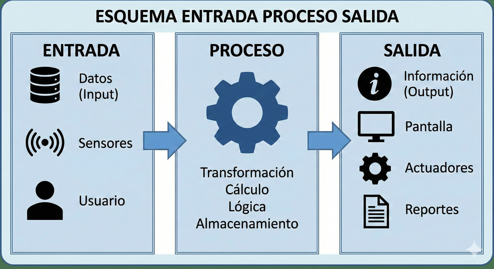

1. Más allá del PC
Hasta ahora hemos programado pantallas. Pero la ingeniería de verdad empieza cuando el código toca el mundo físico.
Un Sistema de Computación Física es aquel que puede sentir el entorno (Sensores) y reaccionar ante él (Actuadores), controlado por un "cerebro" digital. No es un ordenador de escritorio; es tecnología embebida en la realidad.
2. Microcontrolador: Calcula en milisegundos.
3. Actuador: Explota la bolsa de aire.
2. Microcontrolador: Decide regar.
3. Actuador: Abre electroválvula de agua.

2. Eligiendo el Cerebro
En robótica y sistemas físicos no solemos usar CPUs potentes (como un i7), sino Microcontroladores. Son ordenadores diminutos "todo en uno" diseñados para controlar tareas específicas.
| Modelo | Tipo | Puntos Fuertes | Uso Ideal |
|---|---|---|---|
| Arduino UNO | Microcontrolador | Robusto, fácil de aprender, 5V. | Aprender electrónica básica, robots simples. |
| ESP32 | Microcontrolador IoT | Tiene Wi-Fi y Bluetooth integrados. Potente. | Domótica, IoT, proyectos conectados. |
| Raspberry Pi 4 | Microprocesador (Mini PC) | Corre Linux, tiene HDMI, mucha RAM. | Visión artificial, servidores, IA. |
| Micro:bit | Microcontrolador Educativo | Sensores integrados (brújula, luz, botones). | Iniciación rápida y wearables. |
3. Anatomía del Sistema
A. Clasificación Hardware
Un robot se compone de tres bloques funcionales:
- 1. Sensores (Entradas) Los sentidos. Convierten magnitudes físicas en señales eléctricas. (Ej. LDR, Ultrasonidos, Final de carrera).
- 2. Controladora (Proceso) El cerebro. Procesa los datos y decide (Arduino, ESP32).
- 3. Actuadores (Salidas) Los músculos. Realizan la acción física. (Ej. Motores DC, Servomotores, Zumbadores, LEDs).
B. Ciclo de Vida del Software
Antes de escribir código (programar), un ingeniero sigue un proceso riguroso:
¿Qué problema resolvemos? ¿Qué debe hacer el robot?
Dibujar el Diagrama de Flujo. Planificar la lógica.
Escribir el programa (C++, Python, Bloques).
Buscar "bugs" (errores) y actualizar el sistema.
4. Seguridad de Hardware
Cortafuegos de Hardware (Hardware Firewall)
A diferencia del firewall de Windows (que es software), este es un dispositivo físico que se coloca entre la conexión a internet y tu red local.
- Inspecciona físicamente cada paquete de datos.
- Es mucho más rápido y seguro que el software.
- Se usa en empresas e industria crítica.
Módulos de Seguridad de Hardware (HSM)
¿Dónde se guardan las claves criptográficas de un banco o de tu DNI electrónico? En un HSM.
Taller de Ingeniería (Evaluación)
Demuestra que estás listo para construir robots reales en la próxima unidad.
Misión 1: Anatomía Robótica
Criterio 1.1Observa el sistema de una puerta automática de garaje.
Clasifica estos 5 componentes en una tabla: Entrada, Proceso o Salida.
Misión 2: Selección de Componentes
CYR.3.F.2Te han contratado para 2 proyectos. Elige el microcontrolador adecuado (Arduino, ESP32 o Raspberry Pi) y justifica por qué.
- Proyecto A: Un sistema que riegue una planta y envíe un Tweet cuando lo haga.
- Proyecto B: Un semáforo de juguete para aprender a programar en clase.
Misión 3: El Bug del Ciclo de Vida
CYR.3.F.3Un ingeniero novato ha empezado a escribir código sin saber qué tiene que hacer el robot.
Escribe un breve informe explicando qué riesgos corre por saltarse las fases de Análisis y Diseño, y cómo afectará eso a la fase de Mantenimiento.
Misión 4: Investigación HSM
CYR.3.F.4Seguridad de alto nivel.
Busca en internet qué es el chip TPM (Trusted Platform Module) que tienen los ordenadores modernos para instalar Windows 11. Explica en 3 líneas qué relación tiene con un HSM (Módulo de Seguridad de Hardware).
Proyecto Final: "El Blueprint"
Vas a diseñar sobre papel (o digitalmente) el sistema que te gustaría construir en la próxima unidad de Robótica.
- Dibuja un esquema del sistema.
- Identifica qué sensores necesitarías (Luz, distancia, temperatura...).
- Identifica qué actuadores harían la acción.
- Define qué microcontrolador usarías como cerebro.